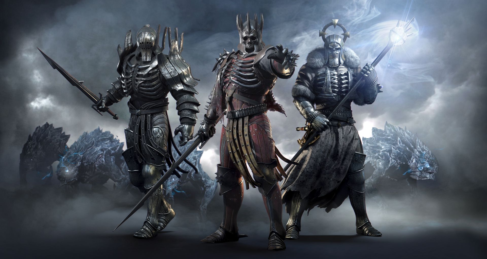

STORY
The world is in chaos. The air is thick with tension and the smoke of burnt villages. The fearsome Empire of Nilfgaard has struck again, ravaging the helpless Northern Kingdoms. The once mighty who tried to use Geralt for their own gain are now gone. In these uncertain times, no one can say what fortune holds in store, who will bring peace to the world and who will cause it only misery. But a force darker and deadlier emerges. The petty men and women commanding tin-plated armies fail to understand that their conflict is child's play compared to the Wild Hunt, the otherworldly threat which now looms. These ghastly spectral riders have for ages plagued humankind, bringing misery to the world. This time the Wild Hunt seeks one person in particular: the one individual Destiny itself bestowed upon Geralt, the one soul Geralt considers kin. This is the Wild Hunt

Geralt rejoins his long-lost lover, Yennefer, in the town of White Orchard. Yennefer tells him that Emperor Emhyr has summoned him to the city of Vizima. Emhyr tasks Geralt with finding Ciri, who has recently been seen in several places. Ciri is a Child of the Elder Blood, the last heir to an ancient elfish bloodline with the power to manipulate space and time. Geralt first hears that Ciri was in Velen at Crow's Perch, the Bloody Baron's fort. The baron refuses to help, but Geralt's acquaintance (the sorceress Keira Metz) tells him that the elfish mage Avallac'h was looking for Ciri. Keira directs Geralt to the Crones of Crookback Bog: malicious, ancient spirits living near Velen. The Crones say that they captured Ciri for the Wild Hunt before she escaped and have enslaved Anna, the baron's missing wife. Geralt returns to the baron, who tells him that Ciri went to Novigrad. He discovers that the Church of the Eternal Fire, a militant religious organization, is purging mages in Novigrad. Meeting his former lover, Triss Merigold, Geralt learns that Ciri had contacted his friend Dandelion. Geralt navigates Novigrad's criminal underworld to rescue Dandelion, and learns that Ciri teleported to the Skellige archipelago. In Novigrad, Geralt may help Triss to free fugitive mages. He sails to Skellige and rejoins Yennefer, who has been investigating a magical explosion linked to Ciri. They track Ciri to the island of Lofoten, which has been attacked by the Wild Hunt. Geralt and Yennefer realise that Uma, a deformed, cursed creature at Crow's Perch, was present after Ciri's escape. Before leaving Skellige, Geralt can help determine who will rule Skellige after the king's death. Yennefer severs the magical bond between her and Geralt, giving him the option of affirming his love for her or ending their relationship. They bring Uma to the abandoned witcher school of Kaer Morhen, where Yennefer removes his curse and transforms him into Avallac'h. He reveals that he teleported Ciri to the Isle of Mists to save her from the Lofoten attack. Geralt travels to the island and finds Ciri in a deathlike state, until she is awakened by Avallac'h's magic. She says that Eredin's (the King of the Wild Hunt) homeworld is being destroyed by the White Frost, and he wants Ciri's power to conquer the Continent. Ciri and Geralt teleport to Kaer Morhen, pursued by the Wild Hunt.
After a brief reunion with Yennefer, Triss and Vesemir (their witcher mentor), the Hunt attacks. Vesemir is killed protecting Ciri; her distress unleashes her Elder power, and Eredin and the Hunt retreat. Geralt, Yennefer, Triss, Ciri, and their allies conduct a funeral for Vesemir. Ciri and Geralt travel to Novigrad and help Triss and Yennefer reform the Lodge of Sorceresses to aid their fight. They learn about the Sunstone, a relic which can lure Eredin out and bind him to a location. On the Skelligan island of Undvik, Avallac'h uses the Sunstone to draw out the Hunt and their fleet. Geralt, Ciri, their allies and the Nilfgaardian fleet battle the Hunt, and Geralt defeats Eredin in combat. As the White Frost descends on Skellige, Ciri insists that she must confront it with her Elder Blood before it consumes all life on every world. She enters a portal and defeats the White Frost, ending the threat. The game ending varies, depending on previous choices. If Ciri is alive, Geralt can retire with Yennefer or Triss or remain a lone witcher. If Geralt helps Nilfgaard win the war and brings Ciri to meet the emperor, she will become empress; if Ciri does not meet the emperor, Geralt fakes her death and she becomes a witcher. If Ciri dies fighting the White Frost, Geralt hunts down her stolen medallion as a keepsake; surrounded by monsters when he finds it, his fate is unknown.